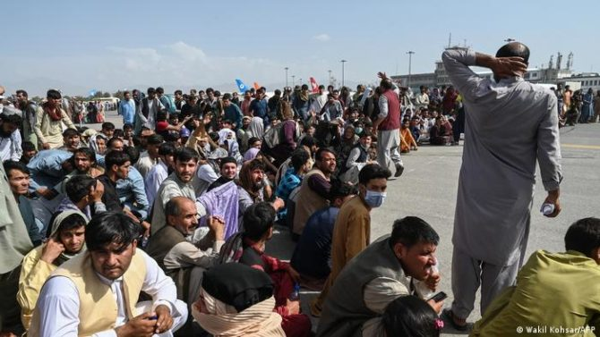
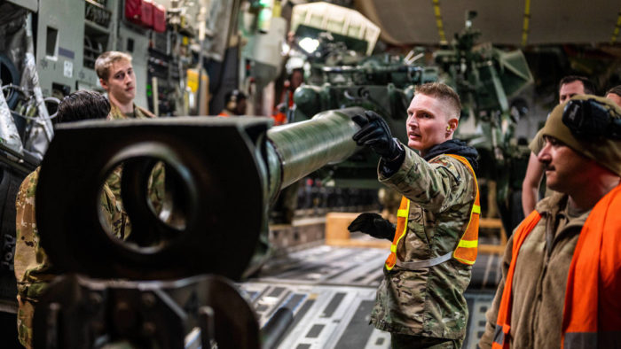
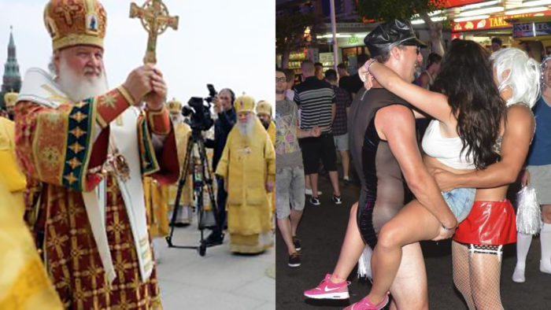
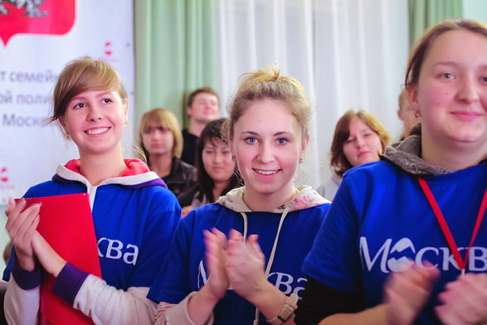

Vladimir Putin: “Millones de personas en Occidente están siendo conducidas a una catástrofe espiritual. Las élites se están volviendo locas”
Vladimir Putin.- Es momento difícil, todos lo sabemos muy bien, un momento histórico para nuestro país, en un momento de cambios cardinales e irreversibles en todo el mundo, los eventos históricos más importantes que determinan el futuro de nuestro país. y nuestra gente, cuando cada uno de nosotros tenemos una gran responsabilidad.
{kind=link}
Hace un año, con el fin de proteger a las personas en nuestras tierras históricas, para garantizar la seguridad de nuestro país, para eliminar la amenaza que representa el régimen neonazi que surgió en Ucrania después del golpe de 2014, se tomó la decisión de realizar un especial operación militar. Y paso a paso, cuidadosa y consistentemente, resolveremos las tareas que tenemos ante nosotros.
A partir de 2014, Donbass luchó, defendió el derecho a vivir en su propia tierra, hablar su idioma nativo, luchó y no se rindió en las condiciones de bloqueo y bombardeos constantes, odio no disimulado del régimen de Kiev, creyó y esperó a que Rusia ven al rescate.
Mientras tanto, hicimos todo lo posible, realmente todo lo posible para resolver este problema por medios pacíficos, negociamos pacientemente una salida pacífica de este grave conflicto.
 Pero un escenario completamente diferente se estaba preparando a nuestras espaldas. Las promesas de los gobernantes occidentales, sus garantías sobre el deseo de paz en el Donbass resultaron ser, como ahora vemos, una falsificación, una cruel mentira. Simplemente jugaron por ganar tiempo, se involucraron en artimañas, hicieron la vista gorda ante los asesinatos políticos, las represiones del régimen de Kiev contra personas objetables, la burla de los creyentes y alentaron cada vez más a los neonazis ucranianos a llevar a cabo acciones terroristas en el Donbass. En las academias y escuelas occidentales, se entrenó a los oficiales de los batallones nacionalistas y se suministraron armas.
Pero un escenario completamente diferente se estaba preparando a nuestras espaldas. Las promesas de los gobernantes occidentales, sus garantías sobre el deseo de paz en el Donbass resultaron ser, como ahora vemos, una falsificación, una cruel mentira. Simplemente jugaron por ganar tiempo, se involucraron en artimañas, hicieron la vista gorda ante los asesinatos políticos, las represiones del régimen de Kiev contra personas objetables, la burla de los creyentes y alentaron cada vez más a los neonazis ucranianos a llevar a cabo acciones terroristas en el Donbass. En las academias y escuelas occidentales, se entrenó a los oficiales de los batallones nacionalistas y se suministraron armas.
Y quiero enfatizar que incluso antes del inicio de la operación militar especial, Kiev estaba negociando con Occidente sobre el suministro de sistemas de defensa aérea, aviones de combate y otro equipo pesado a Ucrania. También recordamos los intentos del régimen de Kiev de adquirir armas nucleares, porque hablamos de ello públicamente.
Los Estados Unidos y la OTAN desplegaron rápidamente sus bases militares y laboratorios biológicos secretos cerca de las fronteras de nuestro país, dominaron el teatro de futuras operaciones militares en el curso de maniobras, prepararon al régimen de Kiev sujeto a ellos, la Ucrania que habían esclavizado, para un gran guerra
Y hoy lo admiten, lo admiten públicamente, abiertamente, sin dudarlo. Parecen estar orgullosos, deleitándose en su traición, llamando tanto a los acuerdos de Minsk como al formato de Normandía una actuación diplomática, un farol. Resulta que todo el tiempo cuando el Donbass estaba en llamas, cuando se derramaba sangre, cuando Rusia estaba sinceramente, quiero enfatizar esto, estaba luchando sinceramente por una solución pacífica, estaban jugando con la vida de las personas, estaban jugando, de hecho, como dicen en círculos conocidos, con cartas marcadas.
Este repugnante método de engaño se ha probado muchas veces antes. Se comportaron con la misma desvergüenza, engañosamente, destruyendo Yugoslavia, Irak, Libia, Siria. De esta vergüenza nunca serán lavados. Los conceptos de honor, confianza, decencia no son para ellos.
{kind=link}
Libia tras el bombardeo de Estados Unidos
Durante los largos siglos de colonialismo, dictado, hegemonía, se acostumbraron a que se les permitiera todo, se acostumbraron a escupir al mundo entero. Resultó que tratan a los pueblos de sus propios países con el mismo desdén, como un maestro; después de todo, también los engañaron cínicamente o los engañaron con fábulas sobre la búsqueda de la paz, sobre la adhesión a las resoluciones del Consejo de Seguridad de la ONU sobre Donbass. De hecho, las élites occidentales se han convertido en un símbolo de mentiras sin principios.
Defendemos firmemente no solo nuestros intereses, sino también nuestra posición de que en el mundo moderno no debe haber división en los llamados países civilizados y todo lo demás, que se necesita una asociación honesta, que en principio niega cualquier exclusividad, especialmente agresiva. .
Estábamos abiertos, sinceramente listos para un diálogo constructivo con Occidente, dijimos e insistimos en que tanto Europa como el mundo entero necesitaban un sistema de seguridad indivisible e igual para todos los estados, y durante muchos años sugerimos que nuestros socios discutieran esta idea juntos y trabajaran en él implementación. Pero en respuesta, recibieron una reacción indistinta o hipócrita. Esto se trata de palabras. Pero también hubo acciones específicas: la expansión de la OTAN a nuestras fronteras, la creación de nuevas áreas posicionales para la defensa antimisiles en Europa y Asia: decidieron esconderse detrás de nosotros con un «paraguas», este es el despliegue de contingentes militares, y no sólo cerca de las fronteras de Rusia.
{kind=link}
Vista aérea del aeropuerto de Madrid-Torrejón y la base aérea de Torrejón, cerca de Madrid.
Quiero enfatizar, sí, de hecho, es bien conocido por todos: ningún país en el mundo tiene tal cantidad de bases militares en el extranjero como los Estados Unidos de América. Hay cientos de ellos, quiero enfatizar esto, cientos de bases en todo el mundo, todo el planeta está lleno de basura, solo necesitas mirar el mapa.
El mundo entero ha visto cómo se retiran de acuerdos fundamentales en el campo de las armas, incluido el tratado sobre misiles de medio y menor alcance, rompiendo unilateralmente los acuerdos fundamentales que mantienen la paz mundial. Por alguna razón, lo hicieron, no hacen nada así, como saben.
Finalmente, en diciembre de 2021, presentamos oficialmente proyectos de acuerdos de garantía de seguridad a EE. UU. y la OTAN. Pero en todos los puestos clave, fundamentales para nosotros, recibieron, de hecho, una negativa directa. Entonces finalmente quedó claro que se dio el visto bueno para la implementación de planes agresivos y que no se iban a detener.
La amenaza está creciendo, y cada día. La información que llegaba no dejaba dudas de que en febrero de 2022 todo estaba listo para otra sangrienta acción punitiva en el Donbass, contra la cual, les recuerdo, el régimen de Kiev arrojó artillería, tanques y aviones allá por 2014.
{kind=link}
Todos recordamos bien las imágenes cuando se llevaron a cabo ataques aéreos en Donetsk, los ataques aéreos se llevaron a cabo no solo en ella, sino también en otras ciudades. En 2015, volvieron a intentar un ataque directo al Donbass, mientras continuaban el bloqueo, los bombardeos y el terror contra la población civil. Todo esto, permítanme recordarles, contradecía completamente los documentos y resoluciones relevantes adoptados por el Consejo de Seguridad de la ONU, por completo: todos fingían que no pasaba nada.
Quiero repetir esto: fueron ellos quienes desencadenaron la guerra, y nosotros usamos la fuerza y la usamos para detenerla.
Quienes planearon un nuevo ataque contra Donetsk, Donbass y Lugansk entendieron claramente que el próximo objetivo era un ataque contra Crimea y Sebastopol, y nosotros lo sabíamos y lo entendíamos. Y ahora también se habla abiertamente de estos planes de gran alcance en Kiev: han revelado, han revelado lo que ya sabíamos tan bien.
Protegemos la vida de las personas, nuestro propio hogar. Y el objetivo de Occidente es el poder ilimitado. Ya ha gastado más de 150.000 millones de dólares en ayudar y armar al régimen de Kiev. A modo de comparación: según la Organización para la Cooperación y el Desarrollo Económicos, los países del G7 han asignado alrededor de 60 mil millones de dólares en 2020-2021 para ayudar a los estados más pobres del mundo. Comprensible, ¿verdad? Para la guerra – 150, y para los países más pobres, que supuestamente son atendidos constantemente – 60, e incluso bajo las conocidas demandas de obediencia de los países – destinatarios de este dinero. ¿Y dónde está toda la charla sobre la lucha contra la pobreza, sobre el desarrollo sostenible, sobre el medio ambiente? ¿A dónde va todo? ¿Adónde fue todo? Al mismo tiempo, el flujo de dinero para la guerra no disminuye. Además, no reparan en gastos para fomentar disturbios y levantamientos en otros países, y nuevamente en todo el mundo.
En una conferencia reciente en Munich, hubo un sinfín de acusaciones contra Rusia. Uno tiene la impresión de que esto se hizo solo para que todos olvidaran lo que ha hecho el llamado Occidente en las últimas décadas. Y fueron ellos quienes dejaron salir al genio de la botella, hundiendo regiones enteras en el caos.
Según los propios expertos estadounidenses, a raíz de las guerras -quiero llamar la atención sobre esto: nosotros no sacamos estas cifras, las dan los propios estadounidenses-, a raíz de las guerras que Estados Unidos desató después de 2001, casi 900 mil personas murieron, más de 38 millones se convirtieron en refugiados. Ahora solo quieren borrar todo esto de la memoria de la humanidad, pretenden que no pasó nada. Pero nadie en el mundo ha olvidado y no olvidará esto.
{kind=link}
Ninguno de ellos considera víctimas humanas y tragedias, porque, por supuesto, están en juego billones y billones de dólares; la capacidad de seguir robando a todos; bajo la apariencia de palabras sobre democracia y libertades, para difundir valores neoliberales e inherentemente totalitarios; colgar etiquetas en países y pueblos enteros, insultar públicamente a sus líderes; reprimir la disidencia en sus propios países; creando la imagen de un enemigo, desviando la atención de la gente de los escándalos de corrupción -después de todo, todo esto no sale de las pantallas, lo vemos todo- de los crecientes problemas y contradicciones económicas, sociales, interétnicas internas.
Permítanme recordarles que en los años 30 del siglo pasado, Occidente abrió el camino para que los nazis tomaran el poder en Alemania. Y en nuestro tiempo, comenzaron a hacer de Ucrania «anti-Rusia». El proyecto en realidad no es nuevo. Las personas que están al menos un poco inmersas en la historia lo saben perfectamente: este proyecto se remonta al siglo XIX, se cultivó en el Imperio austrohúngaro, en Polonia y en otros países con un objetivo: arrancar estos territorios históricos. , que hoy se llaman Ucrania, de nuestro país. Eso es lo que es este objetivo. No hay nada nuevo, ninguna novedad, todo se repite.
Occidente aceleró la implementación de este proyecto hoy al apoyar el golpe de Estado de 2014. Después de todo, el golpe es cruento, antiestatal, anticonstitucional, como si nada, como si fuera necesario, incluso informaron cuánto dinero se gastó en él. La rusofobia, el nacionalismo extremadamente agresivo, se colocó en la base ideológica.
Recientemente, una de las brigadas de las fuerzas armadas de Ucrania, es una pena decirlo, es una pena para nosotros, no lo son, recibió el nombre de «Edelweiss», como la división nazi, que participó en la deportación. de judíos, la ejecución de prisioneros de guerra, en operaciones punitivas contra los partidarios de Yugoslavia, Italia, Checoslovaquia y Grecia. Las Fuerzas Armadas de Ucrania y la Guardia Nacional de Ucrania son especialmente populares entre los galones de Das Reich, «Dead Head», «Galicia» y otras unidades de las SS, que también tienen sangre en las manos hasta el codo. Las marcas de identificación de la Wehrmacht de la Alemania nazi se aplican a los vehículos blindados ucranianos.
{kind=link}
Los neonazis no ocultan de quién son los herederos. Es sorprendente que en Occidente, ninguno de los poderes fácticos no se dé cuenta. ¿Por qué? Porque a ellos no les importa. No me importa por quién apostar en la lucha contra nosotros, en la lucha contra Rusia. Lo principal es que luchan contra nosotros, contra nuestro país, lo que significa que todos pueden ser utilizados. Y lo vimos, y sucedió: tanto terroristas como neonazis, incluso si el diablo es calvo, puede usarlo, Dios me perdone, si solo cumplieran su voluntad, sirviera como arma contra Rusia.
El proyecto “anti-Rusia” es, de hecho, parte de una política revanchista hacia nuestro país, para crear focos de inestabilidad y conflictos justo en nuestras fronteras. Y luego, en los años 30 del siglo pasado, y ahora el plan es el mismo: dirigir la agresión hacia el este, iniciar una guerra en Europa, eliminar a los competidores por poder.
No estamos en guerra con el pueblo de Ucrania, ya he hablado de esto muchas veces. El propio pueblo de Ucrania se convirtió en rehén del régimen de Kiev y sus amos occidentales, quienes de hecho ocuparon este país en el sentido político, militar y económico, destruyeron la industria ucraniana durante décadas y saquearon los recursos naturales. El resultado natural fue la degradación social, un aumento colosal de la pobreza y la desigualdad. Y en tales condiciones, por supuesto, es fácil recoger material para operaciones militares. Nadie pensó en las personas, estaban preparados para la masacre y eventualmente se convirtieron en consumibles. Es triste, da miedo hablar de ello, pero es un hecho.
La responsabilidad de incitar al conflicto ucraniano, de la escalada, del aumento del número de sus víctimas recae enteramente en las élites occidentales y, por supuesto, en el actual régimen de Kiev, para el que el pueblo ucraniano es, de hecho, un extraño. El actual régimen ucraniano no sirve a los intereses nacionales, sino a los intereses de terceros países.
Occidente está utilizando a Ucrania como ariete contra Rusia y como campo de entrenamiento. No me detendré ahora en los intentos de Occidente de cambiar el rumbo de las hostilidades, en sus planes para aumentar los suministros militares; todos ya lo saben. Pero una circunstancia debe quedar clara para todos: cuanto más sistemas occidentales de largo alcance lleguen a Ucrania, más nos veremos obligados a alejar la amenaza de nuestras fronteras. Es natural.
{kind=link}
Las élites de Occidente no ocultan su objetivo: infligir, como dicen, este es un discurso directo, «la derrota estratégica de Rusia». ¿Qué significa? Para nosotros, ¿qué es? Esto significa acabar con nosotros de una vez por todas, es decir, pretenden trasladar un conflicto local a una fase de confrontación global. Así entendemos todo esto y reaccionaremos en consecuencia, porque en este caso estamos hablando de la existencia de nuestro país.
Pero tampoco pueden dejar de ser conscientes de que es imposible derrotar a Rusia en el campo de batalla, por lo que están realizando ataques de información cada vez más agresivos contra nosotros. En primer lugar, por supuesto, se elige como objetivo a los jóvenes, a las generaciones jóvenes. Y aquí nuevamente mienten constantemente, distorsionan los hechos históricos, no dejan de atacar nuestra cultura, la Iglesia Ortodoxa Rusa y otras organizaciones religiosas tradicionales de nuestro país.
Mire lo que están haciendo con sus propios pueblos: la destrucción de la familia, la identidad cultural y nacional, la perversión, el abuso de niños, hasta la pedofilia, se declaran la norma, la norma de su vida, y el clero, los sacerdotes son obligados a bendecir los matrimonios entre personas del mismo sexo. Dios los bendiga, que hagan lo que quieran. ¿Qué quieres decir aquí? Los adultos tienen derecho a vivir como quieran, esto lo hemos tratado en Rusia y siempre lo trataremos así: nadie se entromete en la vida privada, y no lo vamos a hacer.
Pero quiero decirles: pero miren, disculpe, las sagradas escrituras, los libros principales de todas las demás religiones del mundo. Allí se dice de todo, incluso que la familia es la unión de un hombre y una mujer, pero estos textos sagrados ahora están siendo cuestionados. Se ha informado que la Iglesia Anglicana, por ejemplo, está planeando, planeando, aunque solo por el momento, explorar la idea de un dios neutral en cuanto al género. ¿Qué puedes decir? Dios me perdone, no saben lo que hacen.
Millones de personas en Occidente entienden que están siendo conducidos a una verdadera catástrofe espiritual. Las élites, francamente, se están volviendo locas y parece que no hay cura. Pero estos son sus problemas, como dije, y nosotros estamos obligados a proteger a nuestros hijos, y lo haremos: protegeremos a nuestros hijos de la degradación y la degeneración.
{kind=link}
Es obvio que Occidente intentará socavar y dividir nuestra sociedad, confiar en los traidores nacionales que en todo momento – quiero enfatizar esto – tienen el mismo veneno del desprecio por su propia Patria y el deseo de ganar dinero vendiendo esto. veneno a los que están dispuestos a pagar por ello. Siempre ha sido así.
Quien se haya embarcado en el camino de la traición directa, cometiendo delitos terroristas y otros contra la seguridad de nuestra sociedad, la integridad territorial del país, será responsable ante la ley. Pero nunca seremos como el régimen de Kiev y las élites occidentales que participan y han participado en la «cacería de brujas» en el pasado, no ajustaremos cuentas con aquellos que dieron un paso al costado, se retiraron de su patria. Que permanezca en su conciencia, que vivan con ello, tienen que vivir con ello. Lo principal es que la gente, los ciudadanos de Rusia les dieron una evaluación moral.
Estoy orgulloso, creo que todos estamos orgullosos, de que nuestra gente multinacional, la gran mayoría de los ciudadanos, haya tomado una posición de principios con respecto a la operación militar especial, haya entendido el significado de las acciones que estamos realizando, haya apoyado nuestras acciones para proteger Donbass. En este apoyo, ante todo, se manifestó un verdadero patriotismo, un sentimiento que es históricamente inherente a nuestro pueblo. Asombra con su dignidad, profunda conciencia de todos, recalco, de todos, de su propio destino inextricable con el destino de la Patria.
Quiero agradecer a todos, a todo el pueblo de Rusia por su coraje y determinación, para dar las gracias a nuestros héroes, soldados y oficiales del ejército y la marina, la Guardia Nacional, los miembros de los servicios especiales y todas las fuerzas del orden. agencias, soldados de los cuerpos de Donetsk y Luhansk, voluntarios, patriotas que luchan en las filas de reserva del ejército de combate BARS.

Doy las gracias a los profesores que se preocupan sinceramente por las jóvenes generaciones de Rusia, especialmente aquellos profesores que trabajan en las condiciones más difíciles, de hecho, en primera línea; figuras culturales que acuden a la zona de guerra, a los hospitales para apoyar a los soldados y oficiales; voluntarios que ayudan al frente y civiles; periodistas, sobre todo, por supuesto, corresponsales de guerra que se arriesgan en el frente para contar la verdad al mundo entero; pastores de las religiones tradicionales rusas, sacerdotes militares, cuya sabia palabra apoya e inspira a las personas; funcionarios y empresarios – todos aquellos que cumplen su deber profesional, cívico y simplemente humano.
Palabras especiales para los residentes de las Repúblicas Populares de Donetsk y Lugansk, las regiones de Zaporozhye y Kherson. Ustedes mismos, queridos amigos, ustedes mismos determinaron su futuro en referéndums, tomaron una decisión firme, a pesar de las amenazas y el terror de los neonazis, en condiciones en que las operaciones militares estaban muy cerca, pero no había ni hay nada más fuerte que su determinación de ser con Rusia, con vuestra Patria.
Quiero enfatizar que esta es la reacción de la audiencia a los residentes de las Repúblicas Populares de Donetsk y Luhansk, Zaporozhye y Kherson. Una vez más: reverencia a todos ellos.
Ya hemos comenzado y seguiremos construyendo un programa de gran envergadura para la recuperación y el desarrollo socioeconómico de estos nuevos sujetos de la Federación. Esto incluye la reactivación de empresas y empleos, los puertos del Mar de Azov, que una vez más se ha convertido en un mar interior de Rusia, y la construcción de nuevas carreteras modernas, como hicimos en Crimea, que ahora tiene una conexión terrestre confiable con toda Rusia. Definitivamente implementaremos todos estos planes juntos.
{kind=link}
El presidente ruso, Vladímir Putin, en la misa de Navidad en la Catedral de la Anunciación en Moscú, el 7 de enero de 2023.
Hoy, las regiones del país brindan apoyo directo a las ciudades, distritos y aldeas de las Repúblicas Populares de Donetsk y Lugansk, la región de Zaporozhye y Kherson, lo hacen con sinceridad, como verdaderos hermanos y hermanas. Ahora estamos juntos nuevamente, lo que significa que nos hemos vuelto aún más fuertes y haremos todo lo posible para que la paz tan ansiada regrese a nuestra tierra, para que la seguridad de las personas esté garantizada. Por esto, por sus antepasados, por el futuro de sus hijos y nietos, por el restablecimiento de la justicia histórica, por la reunificación de nuestro pueblo luchador, nuestros héroes luchan hoy.
Todos entendemos, y entiendo cuán insoportablemente difícil es ahora para las esposas, los hijos, las hijas de los soldados caídos, sus padres, quienes criaron a dignos defensores de la Patria, al igual que los jóvenes guardias de Krasnodon, como los niños y niñas. quien durante la Gran Guerra Patriótica luchó contra el nazismo, defendió el Donbass. Toda Rusia recuerda hoy su coraje, firmeza, la mayor fortaleza, sacrificio.
Nuestro deber es apoyar a las familias que han perdido a sus familiares, seres queridos, ayudarlos a criar, criar a sus hijos, darles una educación y una profesión. La familia de cada participante en una operación militar especial debe estar en la zona de atención constante, rodeada de cuidado y honor. Sus necesidades deben ser atendidas de inmediato, sin trámites burocráticos.
Propongo crear un fondo estatal especial. Su tarea estará dirigida, asistencia personal a las familias de los soldados caídos y veteranos de la operación militar especial. Coordinará la prestación de apoyo social, médico, psicológico, resolverá cuestiones de tratamiento y rehabilitación sanatorial, ayuda en la educación, el deporte, el empleo, el emprendimiento, la formación avanzada y en la obtención de una nueva profesión. Una tarea separada más importante de la fundación es la organización de cuidados a largo plazo en el hogar, prótesis de alta tecnología para todos los que lo necesiten.
Pido al Gobierno, junto con la Comisión de Política Social del Consejo de Estado, las regiones, que resuelvan todas las cuestiones organizativas a la mayor brevedad.
El trabajo del fondo estatal debe ser abierto y el procedimiento para brindar asistencia debe ser simple, según el principio de «ventanilla única», sin tesorería ni burocracia. A cada familia, recalco, a cada familia de los fallecidos, a cada veterano, se le debe asignar un trabajador social personal, un coordinador que, en el transcurso de la comunicación personal en tiempo real, vaya resolviendo los temas emergentes. Me gustaría llamar su atención sobre el hecho de que ya este año las estructuras del fondo deberían desplegarse en todas las regiones de la Federación Rusa.
Ya contamos con medidas de apoyo a los veteranos de la Gran Guerra Patria, veteranos de combate y participantes en conflictos locales. Creo que en el futuro el fondo estatal, que mencioné, también puede ocuparse de estos temas importantes. Tenemos que resolverlo, y le pido al Gobierno que lo haga.
Permítanme enfatizar que la creación de un fondo especial no quita responsabilidad a otras estructuras y niveles de poder. Espero que todos los departamentos, regiones y municipios federales sigan prestando mucha atención a los veteranos, el personal militar y sus familias. Y en ese sentido, quiero agradecer a los líderes de los sujetos de la Federación, alcaldes de ciudades, jefes de regiones, que constantemente se reúnen con la gente, van a la línea de contacto y apoyan a sus compatriotas.
{kind=link}
¿Qué te gustaría destacar en particular? Hoy, militares profesionales, movilizados y voluntarios soportan juntos las penurias del frente: estamos hablando de suministros y equipos, de asignaciones monetarias y pagos de seguros en relación con la herida, de atención médica. Sin embargo, los recursos que me llegan a mí ya los gobernadores -también me informan sobre esto- a la fiscalía militar, al Comisionado de Derechos Humanos, indican que lejos de todos estos temas ya están resueltos. Es necesario entender en cada caso específico.
Y una cosa más: el servicio en la zona de una operación militar especial, todos lo entienden muy bien, está asociado con un estrés físico y psicológico colosal, con riesgos cotidianos para la salud y la vida. Por lo tanto, considero necesario establecer para los movilizados, en general para todo el personal militar, para todos los participantes en una operación militar especial, incluidos los voluntarios, permisos regulares de al menos 14 días y al menos una vez cada seis meses, excluyendo el tiempo de viaje, para que cada soldado tuviera la oportunidad de visitar familias, estar cerca de parientes y amigos.
Como saben, hemos aprobado un plan para la construcción y desarrollo de las Fuerzas Armadas para 2021-2025 por Decreto Presidencial. Se está trabajando en su implementación, se están haciendo los ajustes necesarios. Y me gustaría enfatizar que nuestros pasos adicionales para fortalecer el ejército y la marina y el desarrollo actual y futuro de las Fuerzas Armadas deben, por supuesto, basarse en la experiencia de combate real adquirida durante una operación militar especial. Es extremadamente importante para nosotros, incluso se podría decir, absolutamente invaluable.
Ahora, por ejemplo, el nivel de equipamiento de las fuerzas de disuasión nuclear de Rusia con los últimos sistemas es más del 91 por ciento, 91,3 por ciento. Y ahora, repito, teniendo en cuenta la experiencia que hemos adquirido, debemos alcanzar el mismo nivel de calidad en todos los componentes de las Fuerzas Armadas.
Los oficiales y sargentos que han demostrado ser comandantes competentes, modernos y resolutivos -son muchos- serán promovidos a puestos superiores de manera prioritaria, enviados a universidades y academias militares, y servirán como una poderosa reserva de personal para Las fuerzas armadas. Y, por supuesto, deberían estar en demanda en la población civil, en el gobierno en todos los niveles. Solo quiero llamar la atención de los colegas sobre esto. Es muy importante. La gente debe entender que la Patria agradece su contribución a la defensa de la Patria.
Introduciremos activamente las tecnologías más avanzadas que garantizarán un aumento en el potencial cualitativo del ejército y la marina. Tenemos tales desarrollos, muestras de armas y equipos en cada dirección. Muchos de ellos son significativamente superiores a sus contrapartes extranjeras en sus características. La tarea que ahora tenemos ante nosotros es desplegar su producción en masa, en masa. Y tal trabajo está en curso, en curso, su ritmo aumenta constantemente, y por nuestra cuenta, quiero enfatizar esto, en nuestra propia base científica e industrial rusa, debido a la participación activa de las pequeñas y medianas empresas de alta tecnología. en la implementación de la orden de defensa del estado.
Hoy, nuestras fábricas, oficinas de diseño y equipos de investigación emplean tanto a especialistas experimentados como a más y más jóvenes, talentosos, calificados, comprometidos con un gran avance, fieles a las tradiciones de los armeros rusos, para hacer todo lo posible por la victoria.
Ciertamente reforzaremos las garantías para los colectivos laborales. Esto también se aplica a los salarios y la seguridad social. Propongo lanzar un programa especial de viviendas de alquiler preferenciales para empleados de empresas de la industria de defensa. La tarifa de alquiler para ellos será significativamente más baja que la tarifa del mercado, ya que una parte significativa del pago de la vivienda será cubierta por el estado.
Ciertamente discutimos este tema con el Gobierno. Les instruyo que resuelvan todos los detalles de este programa y, sin demora, comiencen a construir tales viviendas de alquiler, principalmente, por supuesto, en las ciudades, nuestros importantes centros de defensa, industriales y de investigación.
Occidente ha desplegado contra nosotros no sólo un frente militar, informativo, sino también económico. Pero en ninguna parte ha logrado nada y nunca lo hará. Además, los iniciadores de las sanciones se están castigando a sí mismos: provocaron aumentos de precios, pérdidas de empleos, cierres de plantas, una crisis energética en sus propios países, y les dicen a sus ciudadanos – escuchamos esto – dicen que los rusos tienen la culpa de todo.
¿Qué medios se utilizaron contra nosotros en esta agresión sancionadora? Intentaron romper los lazos económicos con las empresas rusas, desconectar el sistema financiero de los canales de comunicación para aplastar nuestra economía, privarnos del acceso a los mercados de exportación para reducir los ingresos. Este es el robo, no hay otra forma de decirlo, de nuestras reservas de divisas, los intentos de colapsar el rublo y provocar una inflación destructiva.
{kind=link}
Repito, las sanciones contra Rusia son solo un medio. Y el objetivo, como declaran los propios líderes occidentales -una cita directa- es «hacer sufrir» a nuestros ciudadanos. «Hacer sufrir» – tales humanistas. Quieren hacer sufrir a la gente, desestabilizando así nuestra sociedad desde dentro.
Pero su cálculo no se materializó: la economía y el sistema de gestión rusos resultaron ser mucho más fuertes de lo que creía Occidente. Gracias al trabajo conjunto del Gobierno, el Parlamento, el Banco de Rusia, las entidades constitutivas de la Federación y, por supuesto, la comunidad empresarial, los colectivos laborales, aseguramos la estabilidad de la situación económica, protegimos a los ciudadanos, salvamos puestos de trabajo, evitamos la escasez en el mercado, incluidos los bienes de primera necesidad, apoyó al sistema financiero, a los empresarios que invierten en el desarrollo de sus negocios, y por ende en el desarrollo del país.
Entonces, ya en marzo del año pasado, se lanzó un paquete de medidas para apoyar los negocios y la economía por un monto total de alrededor de un billón de rublos. Me gustaría llamar su atención sobre el hecho de que esta no es una póliza de emisión, no, no, todo se está haciendo sobre una base sólida de mercado.
A fines de 2022, el producto interno bruto disminuyó. Mikhail Vladimirovich llamó y dijo: Me gustaría que me lo contaras. Ayer, en mi opinión, salió esta información, y con razón, a tiempo, como se esperaba, todo está según lo planeado.
Nos predijeron, recuerden, una recesión económica del 20-25 por ciento. Más recientemente, dijimos: 2.9 – Dije. Un poco más tarde – 2.5. El producto interno bruto cayó un 2,1 por ciento en 2022, según los datos más recientes. Al mismo tiempo, permítanme recordarles que allá por febrero-marzo del año pasado, como dije, pronosticaron que simplemente colapsaríamos la economía.
Las empresas rusas han reconstruido la logística, fortalecido los lazos con socios responsables y predecibles, y hay muchos de ellos, la mayoría en el mundo.
Me gustaría señalar que la participación del rublo ruso en nuestros acuerdos internacionales se duplicó en comparación con diciembre de 2021 y ascendió a un tercio, y junto con las monedas de países amigos, esto ya es más de la mitad.
{kind=link}
Una familia rusa en la Plaza Roja de Moscú.
Junto con nuestros socios, continuaremos trabajando en la formación de un sistema estable y seguro de acuerdos internacionales, independiente del dólar y otras monedas de reserva occidentales, que, con tal política de élites occidentales y gobernantes occidentales, inevitablemente perderá su carácter universal. Todo lo hacen con sus propias manos.
Nuestros empresarios se han ajustado y han cambiado sus lazos, el valor del uso del rublo en el comercio con otros países ha aumentado. En el futuro vamos a trabajar con nuestros socios para crear un sistema de pagos independiente del dólar y otras divisas occidentales, así que las divisas occidentales van a perder su carácter universal. No somos nosotros los que lo provocamos, ni reducimos nuestros pagos, son ellos quienes lo provocan.
La defensa del país es una prioridad muy importante para nosotros, pero resolviendo las tareas, no debemos destruir nuestra economía. Y tenemos todos para garantizar la seguridad y crear las condiciones de desarrollo del país, y así lo seguiremos haciendo.
Muchas esferas de la economía básicas han aumentado la producción. Hemos construido más de cien millones de metros cuadrados de viviendas. Hemos aumentado dos veces la producción de la agricultura. La cosecha ha sido récord: más de 150 toneladas de grano, hasta el 30 junio del 2023 aumentaremos las exportaciones del trigo hasta unos 55 millones de toneladas (hasta 60 incluso). Ustedes recordarán que hace poco la cosecha del año fue de 60 millones durante un año. Ahora vamos a exportar unos 55-60 millones de toneladas. No hemos visto el aumento de desempleo, al contrario: estamos creando trabajo. El mercado laboral es cada vez más confortable. Antes de la pandemia, el nivel de desempleo era 4,7 y ahora es de un 3,7%. Estamos ante mínimos históricos. La economía rusa ha podido superar los riesgos que surgieron. Eran difíciles de prever, así que tuvimos que reaccionar inmediatamente. El Estado y los empresarios trabajaron con rapidez.
{kind=link}
Mucho de este trabajo fue hecho por empresarios de pequeñas y medianas empresas. La reducción económica solamente se registró durante el primer y segundo trimestre del año pasado y luego, solamente hubo aumento.
Vemos nuestras perspectivas: queremos trabajar en nuevos mercados y vamos a producir productos que tienen un valor añadido muy elevado en muchas esferas. Va a aumentar la demanda interna, algo que las compañías seguro que aprovecharán para producir las mercancías tan necesarias. Se hicieron necesarias tras el abandono de compañías occidentales. Entendemos que hay muchos problemas logísticos que resolver, de finanzas, de empleo también. Hemos hablado mucho sobre la estructura de nuestra economía y ahora los cambios son muy necesarios. La situación está cambiando para mejor.
Sabemos qué hay que hacer para lograr un desarrollo independiente, soberano y progresivo de Rusia, que no sea amenazado por peligros externos. Quisiera subrayar especialmente que el sentido de nuestro trabajo no está en adaptarnos a las circunstancias actuales, sino en llevar nuestra economía a nuevos horizontes. Todo cambia rápidamente.
Es un periodo donde hay grandes oportunidades. Todo depende de cómo vamos a aprovechar estas oportunidades, de esto depende nuestra vida futura. Hay que eliminar todas las barreras entre las instituciones, todas las divergencias, discrepancias. Hay que hacerlo todo para lograr el resultado: el arranque de las pequeñas empresas familiares, que es de por si una gran victoria. Como cientos de kilómetros de ferrocarrilles, construcción de jardines de infancia…
En qué direcciones debemos concentrar nuestro esfuerzo?

Vladimir Putin en un discurso en San Petersburgo
Primero vamos a ampliar las relaciones prometedoras internacionales y crear nuevos corredores logísticos. Acordamos continuar la vía de alta velocidad hacia alcanzar China y Mongolia, lo que ampliará nuestras relaciones con los mercados de Asia. Desarrollaremos los puertos del mar negro, del mar de Azov. Ya prestamos mucha atención al corredor internacional Norte-Sur. Y este año por el canal del Volga van a pasar barcos más grandes. Nos abrirá las posibilidades de colaborar más con India y con los países orientales. Ampliaremos el corredor, modernizando los ferrocarriles, aumentando la posibilidad de la vía nórdica.
Es necesario para alcanzar nuestros objetivos y desarrollar los territorios de Siberia. Allí desarrollaremos las infraestructuras: la red de carreteras, de comunicaciones.
Durante el año que viene, las principales carreteras federales van a ser arregladas. Estoy seguro de que lo vamos a lograr.
Vamos a continuar el programa de gasificación gratuita.
Vamos a incluir las infraestructuras públicas, como los policlínicas, jardines de infancia y los ciudadanos siempre podrán solicitar que su casa sea conectada al sistema de gas.
A partir de este año comienza un gran programa de construcción de reforma del sistema de servicios comunitarios y vamos a invertir dinero en ello. Sabemos lo importante que es para los ciudadanos, y lo haremos. Es necesario que el programa tenga un gran impulso y, en segundo lugar, tendremos que aumentar nuestras posibilidades tecnológicas. Acrecentar las capacidades de la industria nacional.
Ya hemos iniciado y activado herramientas de hipotecas y se podrán utilizar para la modernización. Hemos hablad de cuál podría ser el importe de este préstamo, que es importante, de hasta 500 millones de rublos, con 3,5%.
Existirá el régimen que va a rebajar la presión fiscal para las empresas a partir de este año. Vamos a mantener la demanda a los artículos de tecnología con pedidos estatales. Estas medidas permitirán realizar los proyectos más demandados para el año 2030. Y en este año, se esperan 2 billones de rublos de inversiones. No son pronósticos, sino objetivos concretos y pido que el gobierno agilice el lanzamiento de estos proyectos.
Ofrecer ayudas y privilegios fiscales a las empresas. Sé muy bien que los privilegios fiscales no son la medida favorita de nuestras instituciones, pero debe ser una medida universal y es importante aplicar la creatividad.
A partir de este año, las empresas de Rusia podrán reducir sus impuestos si compran las tecnologías rusas y los productos de inteligencia artificial. Habrá coeficientes para ello: cada rublo invertido en la compra de estos artículos, conllevará una reducción fiscal de 1,5 rublos. Pido al gobierno que haga sus propuestas en cuanto a la lista de los equipos, los ámbitos industriales en los que se utilizarán estas medidas.
{kind=link}
En tercer lugar, una buena solución que va a reactivar la economía: es necesario buscar nuevas fuentes de inversiones. Rusia no necesita prestar dinero en el extranjero ni pedirlo. Nuestros bancos trabajan de una manera estable, tienen una gran capacidad.
El año pasado aumentaron los préstamos al sector privado. Hubo muchas preocupaciones, pero los préstamos crecieron un 14%. Es más que en el año 2021, cuando no hubo ninguna operación militar. En ese año el crecimiento fue de 11,7% y este año ha sido de un 14%. La cartera hipotecaria también creció. El sector bancario logró un ingreso, un superávit el año pasado de 203 millones. Es una prueba de la estabilidad del sector financiero de Rusia.
El año que viene la inflación se acercará a la cifra objetivo del 4%. Les recuerdo que en algunos países occidentales ya es de un 17% hasta un 20%. Nosotros estamos en el 4-5%.
Se irán creando condiciones favorables para bajar la tasa de préstamos que serán más asequibles para la población.
Los ahorros de los ciudadanos: hay que estimular que los ciudadanos inviertan más. Pido a la Duma estatal lanzar un respectivo programa público. Es necesario crear condiciones adicionales para que los ciudadanos puedan invertir y ganar dinero dentro del país. Para ello es necesario garantizar la seguridad de las inversiones ciudadanas. Hay que crear el mismo mecanismo que existe en los depósitos bancarios. Les recuerdo que los depósitos están asegurados por el Estado.
Les propongo establecer la cifra de 2 millones 600 mil rublos.
Hay que proteger las inversiones y atraer capitales a las industrias de tecnología para poder trabajar en el mercado interno, y para los compradores de acciones. La libertad de negocio es una condición imprescindible.
Rusia ya demostró que puede adaptarse a la conyuntura cambiante, garantizar el crecimiento económico. Cualquier medida de incentivo dirigida al bien del país debe ser apoyada.
Creo que a este respecto, sería correcto volver a revisar las normativas en cuanto a los crímenes económicos. Por supuesto el Estado debe controlar lo que sucede en esta esfera. No hay que permitir una libertad excesiva, pero hay que avanzar para descriminalizar esta esfera y espero que el Gobierno, junto con los empresarios y otros organismos sigan desarrollando este trabajo. Propongo adoptar medidas adicionales para agilizar el proceso para atraer el negocio dentro del país desde los paraísos fiscales. Es un principio básico.
A este respecto, estimados compañeros, quisiera hacer un comentario algo filosóficos: recordamos qué problemas y qué desequilibrio tuvo que enfrentar la economía soviética en su fase tardía, al fin de la Unión Soviética y a comienzos de los años noventa el país comenzó a crear una economía en base a las relaciones públicas.
Utilizamos como ejemplo los países occidentales y parecía que sería suficiente simplemente crear una red en base a su modelo. Entonces había discrepancias entre EEUU y la UE en cuanto al futuro de la economía rusa. Pero nuestra economía se dirigió hacia occidente convirtiéndose en una fuente de materia cruda. Las causas son bien claras: el negocio ruso que se estaba formando buscó en primer lugar lograr beneficios rápidos y fáciles. Y la forma más corta de alcanzar estos beneficios era vender la materia cruda, el bosque, los hidrocarburos, y nadie pensó en invertir a largo plazo. Por eso, en ámbitos más complicados, las industrias más avanzadas se iban desarrollando poco. Para cambiar esta tendencia tuvimos que trabajar durante años, reformar nuestro sistema fiscal y de inversiones, reformar nuestros objetivos concretos. Hay que tener en cuenta en qué situación se estaba desarrollando nuestro negocio.
Las tecnologías occidentales, las fuentes de finanzas y mercados en Occidente, nuestros capitales también se iban a otros países, en vez de ampliar nuestra industria. En lugar de modernizar nuestras empresas y crear nuevos empleos dentro de Rusia, gastaban este dinero en fincas y bienes inmobiliarios, yates, en el extranjero. En la primera etapa estos ingresos terminaban fuera de nuestro país.
¿Dónde están sus riquezas? Donde está su vida, sus hijos y su futuro. Para el Estado era muy difícil controlar esta situación, prácticamente imposible porque vivíamos en un paradigma de mercado libre. Los últimos acontecimientos han demostrado que la imagen de Occidente como un lugar seguro para tener sus capitales ha sido un mito. Aquellos que veían a Rusia como una fuente de ingreso, que querían vivir en el extranjero, perdieron muchas de sus riquezas.
Dirigiéndome a los empresarios, una vez, les dije que les sería muy difícil salvar su dinero en occidente y así fue.
Otra cosa importante: ninguno de los ciudadanos de a pie en nuestro país lamentó la situación de quienes perdieron sus capitales fuera de nuestro país. Nadie lamentó la situación de quienes perdieron sus palacios, sus villas en occidente. Pero la gente se acuerda de lo que pasaba en los años noventa y cómo se enriquecieron las élites.
{kind=link}
Otra cosa importante es que tras la caída de la Unión Soviética, occidente intentaba incendiar las antiguas repúblicas soviéticas para descomponer nuestro espacio. Incitaban a los terroristas extranjeros en nuestras fronteras y usaban medidas de contención económica en nuestra contra. Las empresas grandes de Rusia son responsables de muchísimos puestos de trabajo, de la situación económica de muchas regiones. Así que, cuando los dirigentes de estas empresas sufren en manos de occidente, es peligroso para nosotros y no podemos tolerar esta situación (ovación).
Si, es verdad, cada uno puede elegir. Alguno quiere vivir hasta la muerte en su palacio, bloqueado con sus cuentas bloqueadas en occidente, o en otro país extranjero, es el derecho de cada uno a elegir. Pero ya es tiempo para entender que para occidente ese tipo de gente será de segunda clase y occidente puede hacer lo que sea con esta gente. Nada les ayudará. Son de segunda clase en occidente.
Pero hay otra opción: estar con su patria. Trabajar para sus compatriotas. Cambiar la vida a su alrededor, en los pueblos y ciudades de Rusia. Este tipo de empresarios, también son el futuro del desarrollo empresarial ruso. Todos deben entender que ellas fuentes del bienestar deben estar aquí, en nuestra patria, en Rusia. Entonces podremos crear una economía fuerte, que no se cierre para el mundo y use todos los beneficios que tienen. El dinero que ganamos debe invertirse en el desarrollo del país, de su infraestructura, del turismo doméstico.
Quiero que me escuchen los que se enfrenten a los problemas de occidente: pedir, suplicar que les devuelvan el dinero es un sinsentido. No les van a ayudar, cuando ustedes saben con quien hacen los negocios. No hay que ir a los juzgados, hay que adaptar su vida, su trabajo. Conozco de manera personal a muchos de ellos, son personas con mucha experiencia. Deben lanzar proyectos nuevos en Rusia, invertir en empleos en Rusia, ayudar a las Universidades, a la Cultura, al deporte en Rusia y así aumentarán sus capitales y ganarán el agradecimiento de la gente. El Estado y la sociedad les van a apoyar. (Ovación en pie del público).
Estas palabras fueron dirigidas a nuestros empresarios. Pero Rusia es un país abierto, una civilización en sí misma, no se trata de ninguna ventaja, pero es una civilización que tenemos, que obtuvimos de nuestros antepasados. Debemos preservarla y traspasarla a las nuevas generaciones. Debemos usar lo mejor y basarnos en la energía de nuestra sociedad, en nuestros principios y valores. Quiero mencionar el carácter de nuestro pueblo que es muy generoso. También nosotros podemos ser buenos amigos, guardar y mantener la palabra. No engañamos a nadie. Apoyaremos a todos los que tengan problemas, que sufrieron durante la pandemia. Fuimos los primeros en ayudar a países europeos como Italia: no olvidaremos cómo ayudamos en Siria, en Turquía durante el terremoto. Es el pueblo ruso el que se fundamenta en nuestra soberanía. Los derechos y libertades de nuestro pueblo están consagrados en nuestra Constitución. Y no los vamos a poner en peligro a pesar e las amenazas.
Las elecciones tanto locales, como regionales y las presidenciales del 2024 se celebrarán de conformidad con la ley, con el procedimiento constitucional. Las elecciones son importantes y nuestras fuerzas están consolidadas, se basan en el bienestar y la seguridad del pueblo. Nuestra soberanía e intereses nacionales.
Les quiero agradecer por su postura muy firme, y recordaré unas palabras, de hace 100 años, “Todos debemos coordinar nuestros esfuerzos, consolidarnos, para apoyar un derecho superior: el derecho de Rusia de ser fuerte”.
{kind=link}
Imagen de la Duma, la cámara legislativa rusa
Entre los voluntarios que están en el frente ahora, se encuentran los diputados de la Duma y representantes de parlamentos regionales. Están representados todos los partidos políticos. Todos trabajan para ayudar al frente: gracias, una vez más, por su postura patriótica.
Un rol muy importante en la sociedad recae en las autoridades locales: de ellas depende la confianza de la gente en la sociedad entera. Repito: la administración del presidente, junto con el gobierno, crear propuestas para, de manera directa, apoyar a los equipos de gobernanza locales. El desarrollo libre de una sociedad tiene mucho que ver con la responsabilidad. Para consolidar nuestros valores, nuestra identidad cultural.
El fondo de las becas presenciales y otros fondos, apoyarán cualquier tipo de búsqueda creativa. Apoyaremos el arte, sea el que sea el género, mientras que sirva al bien, a la armonía. Mientras que se refleje sobre lo mejor que hay en una persona humana. El desarrollo del sector cultural será muy importante para la restauración de vida en los nuevos territorios. Hay que restaurar muchos museos, fondos culturales, para que la gente sienta la conexión con su pasado. Se sienta parte del espacio ruso y de su historia, con la ayuda de los profesores y otros especialistas necesitamos aumentar la calidad de enseñanza, en el amito de las humanidades para que la juventud sepa cuanto más posible sobre nuestra historia y tradición cultural. Nuestras generaciones futuras tienen mucho talento y para este tipo de personas hay concursos, como líderes de Rusia, que les abre las puertas. También hay un concurso “líderes del reconocimiento”. Hay muchos voluntarios que van a los territorios liberados para reactivar la vida social, actúan de manera profesional y con decisión. Esta experiencia les va a ser muy útil. La gente arriesga su vida para la patria.
Quiero subrayar: los que se criaron en el Dombás, serán la base en cuanto al desarrollo de las regiones. Me dirijo a ellos y les digo a ellos que Rusia cuenta con ustedes. Dadas las tareas masivas de nuestro país, necesitamos renovar la política tecnológica y científica. Debemos concentrarnos en los resultados científicos concretos, en todos los ámbitos donde tenemos mucho potencial. Sectores como el transporte, la cultura, etc, son fundamentales para el desarrollo. Las nuevas tecnologías, aquí como en la cultura, nosotros debemos darles a los investigadores y científicos más libertad para su creatividad. La ciencia fundamental tiene sus reglas propias, pero quiero añadir que las tareas deben ser ambiciosas: los jóvenes van a trabajar en este campo. En diciembre del año pasado estuve con los investigadores jóvenes y preguntaban mucho sobre la cuestión de la vivienda. Tenemos programas específicos y el año pasado asignamos 1000 millones para este programa. En los últimos años, la educación de institutos ha aumentado y el desempleo se ha reducido. Esto quiere decir que la gente trabaja, que hay empleos y necesitamos profesionales. Hay que ampliar el sistema de centros educativos, que deben coordinarse entre sí. También es importante que haya mentores con experiencia real de trabajo durante los próximos 5 años necesitamos preparar un millón de empleados para varios sectores técnicos, incluida la industria militar y la industria atómica. Para poder asegurar la soberanía en nuestra competitividad como país.
Finalmente, una cuestión importante es nuestra educación universitaria. Aquí hay que tener algunos cambios en cuenta. Es necesaria una síntesis de lo mejor del sistema educativo soviético y de la experiencia de los últimos años. Propongo volver al sistema tradicional de educación universitaria (ovación). El periodo de enseñanza puede ser entre 4 y 6 años, incluso una Universidad podría hacer programas de diferente tiempo de preparación.
Y otra cosa importante es que si uno necesita profundizar en sus conocimientos para ser un profesional, debe tener la oportunidad de hacerlo con un posgrado. Y también hay que prestar más atención a los preparativos de doctorados. Hay que cambiar la legislación pertinente, pensar en todos los detalles. Los jóvenes deben tener nuevas oportunidades de tener educación de gran calidad y tener oportunidades de un buen trabajo y no tener problemas a la hora de encontrar trabajo.
También quiero resaltar que los estudiantes actuales podrán continuar estudiando según los programas existentes y las titulaciones no serán revaluados en el futuro. No van a perder su valor con los cambios educativos. Pido que los organismos pertinentes lo controlen. Este es el año del profesor, del mentor. El profesor participa de manera directa en la creación del futuro del país, así que el rol del profesor debe ser importante para el país y deben entenderlo tanto los padres como los niños. Debemos acordarnos siempre de esto.
{kind=link}
También quiero hablar sobre el apoyo de la niñez y de las familias. El presupuesto de la infancia y del apoyo a las familias con niños ha aumentado varias veces en los últimos años. Es el presupuesto que crece con más rapidez. Quiero agradecer a los parlamentarios y al Gobierno por este entendimiento consolidado de nuestras prioridades nacionales. Desde el 1 de febrero el capital para maternidad se ha ajustado en función de la inflación llegando a más del 11% ahora. Gozan de estas medidas también los que habitan en los nuevos territorios en Dombás y en Gerson y Zaporitya. La medida se aplicará a familias con niños que nacieron desde 2007, desde el momento en que comenzó a implementarse el programa en Rusia. La misma decisión fue tomada respecto a los ciudadanos de Crimea en su momento.
Continuaremos ayudando a las familias con hijos y el Gobierno también debe aumentar los ingresos de los ciudadanos de Rusia. El pago mínimo el año pasado fue aumentado dos veces y el aumento total fue de casi el 20%. Continuaremos aumentando este pago mínimo; a partir del inicio de este año ya se ha aumentado un 6%. Propongo otro aumento para el 10%, así que el pago mínimo será más de 19.000 rublos.
Ahora, en cuanto al sistema fiscal, a partir del año pasado, familias con dos y más hijos se liberaron de la necesidad de pagar la renta de la vivienda. Si quieren comprar un piso más grande. Los presupuestos regionales deben contar con más medios para ello. Propongo aumentar el importe de 50.000 hasta 110.000 rublos y en cuanto a los gastos a la educación y compra de medicamentos, hasta 150.000 rublos. El Estado va a devolver el porcentaje en cuestión a los ciudadanos.
No sólo hay que aumentar esta reducción fiscal, sino también aumentar la demanda para que se pueda solicitar a distancia y de forma rápida.
Para mejorar el bienestar de nuestras familias debemos reformar el sistema social: muchos institutos están dispuestos a agilizar la reconstrucción de las infraestructuras, desarrollar los territorios rurales. Vamos a apoyar esta tendencia aplicando esta herramienta: los medios reservados en el presupuesto para 2024, las regiones podrán recibirlos ahora a través de los préstamos de tasa cero. En el próximo año serán liquidados automáticamente.
Pido a la comisión de Economía y Finanzas para que participen en este mecanismo. No debemos presionar para lograr objetivos rápidos, sino lograr buenos resultados. Es muy importante para modernizar la etapa básica de la sanidad. Comenzamos este programa en 2021 y pido que los jefes de las regiones no se olviden de que el criterio principal no son las cifras en los informes sino las mejoras en el acceso y la calidad en la sanidad.
Pido que el Gobierno corrija la base normativa para adquirir equipos necesarios para realizar chequeos necesarios en los colegios y las instituciones y pueblos alejados.
Comenzamos un nuevo programa para la reconstrucción de las escuelas: podremos arreglar miles de edificios, la gran parte de los cuales están en territorios rurales.
Haremos lo mismo en la zona del Dombás.
La gente puede ver las mejoras. A partir de 2025 los medios para la reconstrucción de las infraestructuras, como en los colegios y jardines de infancia se asignarán de manera automática para no permitir su desgaste.
Los objetivos de construcción de más de 1.300 colegios desde 201 hasta 2014: en este año se van a abrir las puertas de 400 escuelas.
Aumentamos los préstamos públicos y asignamos 250.000 millones de rublos para la red de transporte. Pido al Gobierno asignar 50.000 millones más a estos objetivos para renovar los medios de transporte en las regiones con la tecnología más moderna. Pido que se preste atención especial a los entornos rurales.
Hemos decidido hasta 2030 el proyecto de Aire Puro para mejorar la situación ecológica en las grandes urbes. Le pido a las empresas y autoridades locales reducir los desechos. También hemos avanzando en el procesamiento de los desechos: la recogida por separado de la basura para acabar con los vertederos grandes. Le pido al Gobierno junto a las regiones que preparen la lista de los objetos nocivos que se eliminarán después de que el programa termine de funcionar. A medio plazo trabajaremos en diferentes ríos y lagos. No vamos a olvidarnos de nuestros ríos pequeños.
Preparamos un proyecto de desarrollo de turismo en los entorno protegidos. El proyecto debe determinar lo que se puede y no se puede construir en cada territorio concreto y determinar los principios del turismo ecológico. Pido a la Duma estatal que desarrolle los detalles de este proyecto.
A principios de febrero de este año, la OTAN hizo una declaración que, básicamente, exigía que Rusia volviera al acuerdo de estratégico para permitir el acceso a las instalaciones nucleares para revisarlas. No sé cómo calificar esta declaración. Sabemos que occidente tiene que ver con los intentos de Kiev de atacar nuestras bases de aviación estratégica. Los drones utilizados para ello fueron preparados con ayuda de la OTAN. Ahora quieren revisar nuestras instalaciones nucleares. En la situación de conflicto parece absurdo.
Quisiera prestar atención especial: no nos permiten realizar inspecciones en el marco de este acuerdo. Nuestras peticiones para revisar las instalaciones simplemente no son respondidas. No podemos examinar nada de lo que tienen ellos. Quisiera subrayar que la OTAN. Y EEEUU dicen abiertamente que su objetivo es una derrota estratégica de Rusia y al mismo tiempo quieren revisar nuestras instalaciones nucleares, las más modernas sobre todo. Acabo de firmar un decreto para poner en marcha nuevos complejos estratégicos terrestres y también quieren inspeccionarlos. Creen que les dejaremos entrar ahí? Al hacer esta declaración conjunta, la OTAN básicamente expresó su deseo de ser parte de este acuerdo de armamentos estratégicos. Creemos que sería útil y que había que haberlo hecho hace tiempo porque en la OTAN también Francia y Reino Unido tienen arsenales nucleares que están modernizando. Estos armamentos también apuntan contra Rusia. Las últimas declaraciones de sus líderes lo confirman. No podemos prescindir de ello, sobre todo ahora. Más aún que el primer acuerdo fue cerrado por la Unión Soviética y EEUU en unas circunstancias muy diferentes cuando se trataba de consolidar la confianza mutua. Luego nuestras relaciones alcanzaron un nivel cuando Rusia y EEUU declararon que ya no se consideraban enemigos. Todo iba muy bien. El acuerdo vigente de 2010 tiene unas cláusulas importantes sobre la indivisibilidad de la seguridad sobre la reducción de los armamentos de ataque. Todo esto está olvidado, pues EEUU abandonó el acuerdo. Nuestras relaciones se han degradado por culpa de EEUU. Son ellos quienes tras el fin de la Unión Soviética empezaron a revisar los resultados de la guerra, comenzaron a construir un orden mundial donde existe un sólo dueño, destruyendo las normas existentes, para destruir los acuerdos de paz. Destruir el sistema de seguridad y control sobre los armamentos. Han planeado y desarrollado conflictos y guerras por todo el mundo con el único objetivo de destruir las estructuras de relaciones diplomáticas.
Así es como fue en la práctica. Después del fin de la URRSS buscan codificar para siempre su dominio global sin tener en cuenta los intereses de la Rusia moderna ni de otros países. Claro que la situación ha cambiado respecto a 1945, pues se van desarrollando nuevas potencias. Es un proceso que no puede ser ignorado pero es inadmisible que EEUU busque cambiar el orden mundial tan sólo para imponer sus intereses.
Ahora, los representantes de la OTAN nos dan un ultimátum para que Rusia cumpla con todos los acuerdos mientras ellos hacen lo que les da la gana. No existe ninguna relación entre los acuerdos existentes y las acciones de occidente y las declaraciones donde dicen que quieren destruir Rusia. Parece de una hipocresía tremenda: nos quieren derrotar y al mismo tiempo revisar nuestras instalaciones nucleares.
La participación de Rusia sobre el acuerdo estratégico de armamento ofensivo la hemos suspendido, no lo abandonamos. Antes de volver al acuerdo necesitamos saber lo que persiguen países occidentales como Francia y Reino Unido. Nos interesa el arsenal nuclear de la OTAN. Ahora con sus declaraciones dicen que quieren participar en acuerdos pertinentes. Esto nos alegra, pero no vamos a tolerar mentiras. Sabemos muy bien que algunas municiones nucleares muy pronto no van a funcionar por razones de su edad. Sabemos que EEUU está desarrollando nuevas municiones nucleares. Lo sabemos muy bien. El ministerio de defensa ruso debe preparar las pruebas, los ensayos necesarios aquí. No lo vamos a hacer los primeros, porque si este tipo de ensayos , si los tiene EEUU, nosotros también.
Estamos atravesando una etapa difícil y lo estamos haciendo juntos. Nos estamos guiando con el ejemplo de nuestros antepasados. Estamos avanzando gracias a nuestro amor a la patria y a nuestra unidad. Esta unidad se hizo obvia después de iniciar la operación especial militar. Porque muchos voluntarios vinieron a los centros militares para ser reclutados. Ahora, allí, en el frente, luchan combatientes de todas las regiones y rezan en idiomas diferentes, pero todos están unidos por el deseo de ganar por la patria. (Ovación y puesta en pie).
{kind=link}
Su labor, muy difícil, está reflejada en toda Rusia. La gente apoya a nuestros combatientes. La gente no quiere estar de lado, con los brazos cruzados. La gente envía medicamentos, equipos técnicos, todo lo necesario al frente para ayudar a guardar las vidas de nuestros combatientes. Sé que las cartas de los escolares, y de otras personas, son muy importantes para nuestros combatientes. La sinceridad, los deseos de los niños les alegran el alma a los combatientes. Todo esto es muy importante, pero importante también es la ayuda de los voluntarios, quienes salvan a los ancianos y a los niños en las zonas en peligro. Les traen comida y agua. Les asisten en los hospitales de guerra y en la línea de combate. Sólo el frente nacional ha podido recopilar más de 5.000 millones de rublos. Esto es importante: el aporte de cada uno es importante. Son de especial sinceridad los momentos cuando la gente de ingresos limitados también intenta ayudar de alguna manera.
Rusia responderá cualquier reto que tenga porque nosotros somos un país único. Un pueblo único y nosotros confiamos en nosotros mismos. Con nosotros está la verdad.
Un GRAN PRESIDENTE PARA UNA GRAN NACIÓN. Sólo recuerdo haber leído un discurso similar de José Antonio Primo de Ribera en toda la Historia de España. Y no era tan incisivo y clarividente como ese Discurso de Vladimir Putin. Lo que explica el gran odio y envidia que despierta entre la gentuza nauseabunda y plutocrática de la Puta Europa y de los “gobiernos” títeres masónicos, liberticidas, asesinos y criminales, todos ellos lacayos del Anglosioismo Globalista y de la Organización Terrorista OTAN. Todos lo patriotas deberíamos recordar en ésta época aciaga las siguientes citas: “Aquel pueblo que no está dispuesto a… Leer más »
Dios te bendiga Putin
Es posible que pueda estar equivocado, pero, al menos, defiende valores.
Y nosotros, la vieja y decadente Europa, ¿qué defendemos…?
¿Poder pagar el gas y el petróleo más barato, o la implantación del NOM y la Agenda 2030 en todo el mundo…?
Los idiotas del batallón Azov están luchando por convertir Ucrania en otra cloaca Lgtb….
LO BUENO DE LA VIDA ES QUE CUANDO NO APRENDEMOS LA LECCION, NOS LA REPITE.
NO APRENDEMOS DE LOS ERRORES PASADOS.
EL SER HUMANO ES INMUTABLE, ES EL MISMO TONTO AYER, HOY Y SEGURO MAÑANA.
LA BARBARIE DEL PASADO ES PATENTE EN EL PRESENTE, AUNQUE CON MAS TECNOLOGIA PARA DESTRUIR.